드론 경로 제어와 모션캡처 정확도 검증
2차 구현에서 연결한 위치 피드백과 비행 제어를 완성된 케이지에 설치하고, 경기XR센터의 모션캡처 스튜디오를 빌려 실험했습니다. 직접 만든 프로그램으로 원형 경로를 비행시키고, 호버 중 외부에서 기체를 건드렸을 때 다시 위치를 잡는 모습을 확인했습니다. 이어 같은 표적을 자체 4카메라 시스템과 센터의 OptiTrack으로 동시에 기록해 위치 정확도를 비교한 과정을 정리합니다.
1. 케이지에서 다시 맞춘 관측 환경
앞선 개발에서는 책상 주변에서 카메라 입력과 IR 마커 추적, 드론의 호버를 순서대로 연결했다. 이번에는 케이지와 카메라 장착부까지 완성해 실험 공간을 고정했다. 카메라 위치가 바뀔 때마다 추적 조건도 달라지므로, 프로그램을 완성하는 일과 장치를 일정하게 설치하는 일을 함께 진행했다.
직접 제작한 카메라 케이스에 각도 조절 마운트와 클램프를 결합했다. 클램프로 프레임을 잡고 카메라 방향을 조절한 뒤 고정하면, 렌즈가 바라보는 범위를 맞추면서도 설치 상태를 유지할 수 있다. 네 카메라가 중앙만 바라보도록 모으는 대신, 이륙 위치부터 비행 높이와 착륙 지점까지 관측이 겹치도록 화면을 확인했다. 바닥에 둔 마커도 여러 카메라에서 보이는지 살피며 낮은 높이의 가림을 점검했다.

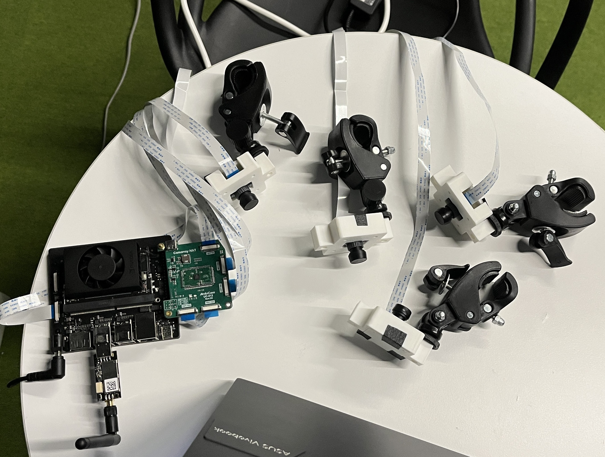

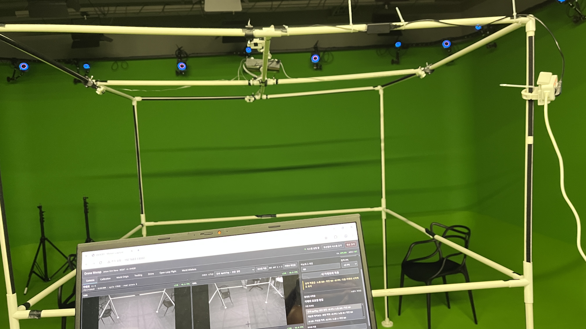

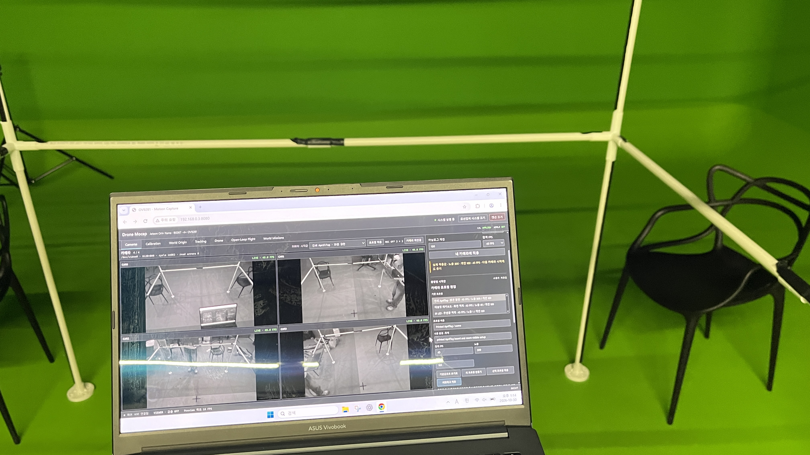

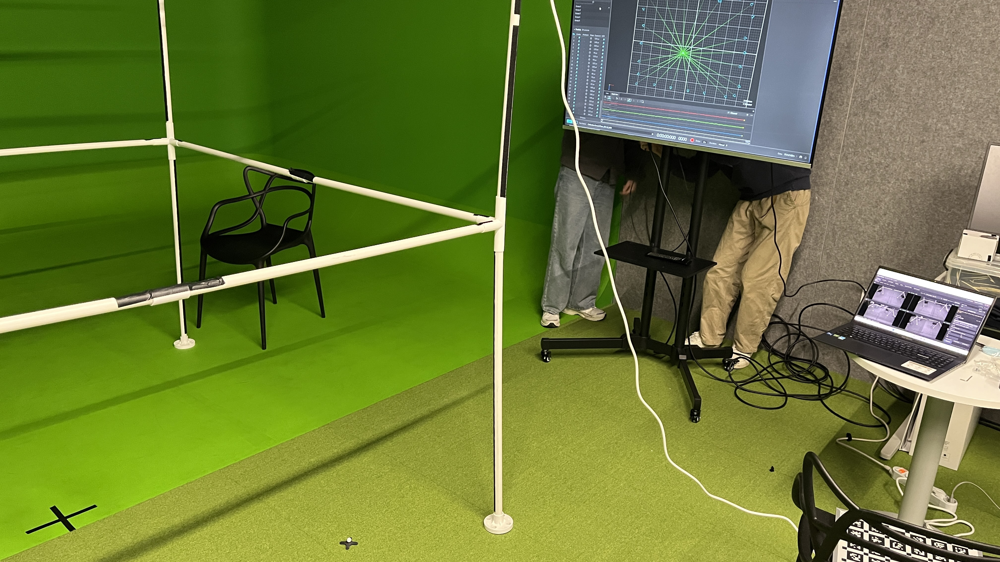
장착을 마친 뒤에는 카메라 캘리브레이션과 월드 원점 설정을 다시 수행했다. 캘리브레이션은 각 영상의 점을 공간의 위치로 바꾸는 기준이고, 월드 원점은 그 위치와 목표 경로를 같은 좌표로 표현하는 기준이다. 카메라를 고정한 상태에서 이 두 기준을 준비해야 화면에 지정한 점이 실제 케이지 안의 같은 위치를 뜻한다.
2. 지정한 좌표를 비행 경로로 연결
프로그램의 World Missions 화면에서 모드를 고르고, 좌표와 방문 순서, 이동 속도, 머무는 시간과 반복 횟수를 정하도록 구성했다. 한 점에서 호버하거나 여러 점을 순서대로 방문할 수 있고, 두 지점을 지정해 왕복 경로나 원형 경로를 만들 수 있다. 저장한 경로를 다시 불러오면 같은 조건의 실험을 반복할 수 있다. 화면에는 계획 경로와 실제 모션캡처 궤적을 함께 표시하고 위치를 CSV로 기록한다.
원형 경로는 두 지점을 지름의 양 끝으로 받아 중심과 반지름을 계산한다. 코드에서는 한 바퀴를 여덟 구간으로 나누고, 그 사이를 연속적인 곡선으로 연결한다. 점 목록만 차례로 보내면 구간이 바뀔 때마다 목표 속도가 급변할 수 있어, world_missions.py에서는 구간의 위치와 접선 속도를 함께 사용해 다항식 궤적을 만든다.
멈췄다가 출발하는 구간에는 시작과 끝의 속도·가속도를 0으로 맞춘 7차 다항식을, 연속해서 통과하는 곡선 구간에는 접선 속도를 연결하는 5차 다항식을 사용했다. 생성된 궤적의 속도와 가속도, 가속도의 변화율인 jerk를 확인하고, 설정한 제한을 넘으면 이동 시간을 늘린다. 경로의 모양을 유지하면서 급격한 명령 변화를 줄이기 위한 처리이다.
이 과정에서 고정된 실험 공간의 좌표와 이륙점을 기준으로 하는 비행 좌표를 구분했다. 사용자가 저장한 목표는 월드 좌표에 남겨 두고, 비행을 시작할 때 이륙 위치와 축 방향을 기준으로 변환한다. 목표점을 지정하는 기능, 카메라 보정, 위치 피드백이 같은 기준으로 연결되면서 케이지 안에서 원형 비행을 반복할 수 있게 됐다.
직접 연결해 보니 경로가 화면에서 매끄럽게 그려지는 것과 기체가 그 경로를 따라가는 것은 서로 이어서 풀어야 할 문제였다. 목표 궤적을 만드는 단계에서는 구간 경계의 움직임을 다루고, 실행 중에는 최신 위치가 들어오는지와 기체의 상태를 확인해야 했다. 카메라가 계산한 위치를 외부 관측값으로 전달하고 기체의 상태 추정기와 제어기가 반응하는 구조는 Crazyflie의 외부 위치 입력 문서와 함께 살펴보며 구현을 정리했다.
3. 원형 비행과 호버 복귀
완성한 프로그램으로 원을 두 바퀴 도는 비행과 세 바퀴 도는 비행을 진행했다. 경로 수행 전후의 상승과 착륙도 함께 기록해, 일정 높이에서 원을 도는 구간뿐 아니라 높이가 바뀌는 과정까지 비교할 수 있게 했다. 상단의 첫 번째 영상은 이 중 세 바퀴 비행을 실제 공간에서 촬영한 것이다.
두 번째 영상에서는 목표 위치에서 호버하는 기체를 직접 건드려 위치가 벗어나게 한 뒤, 다시 위치를 잡는 모습을 확인했다. 목표점을 유지하는 동안 관측된 위치가 달라지면 기체가 오차를 줄이는 방향으로 반응한다. 이렇게 경로를 따라가는 동작과 외란 후의 복귀 동작을 나누어 보면서, 위치 추정부터 무선 전달과 제어까지 연결한 시스템의 반응을 확인했다.

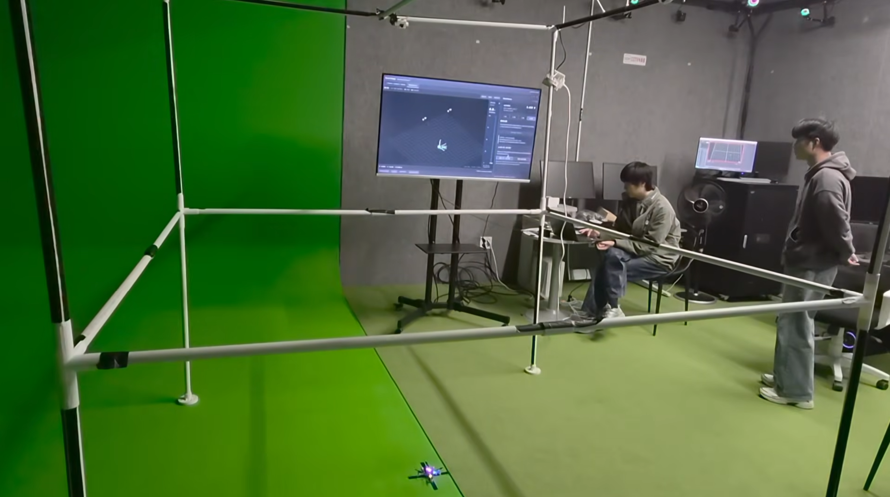
4. 같은 움직임을 두 시스템으로 기록
비행 동작과 함께 위치 정확도도 평가하기 위해 경기XR센터의 크로마키·모션캡처 스튜디오를 대여했다. 처음 계획했던 리니어 모터 스테이지 대신, 실제 드론과 자유롭게 움직이는 표적을 상용 모션캡처 시스템과 동시에 관측하는 방식으로 검증 환경을 구성했다.
센터 공식 시설 안내에는 OptiTrack Prime 22 12대와 Prime 13 12대, 모션캡처 소프트웨어와 운용 PC가 소개돼 있다. 여러 방향에서 표적을 보는 센터의 시스템을 기준 기록(GT)으로 삼고, 직접 만든 OV9281 4카메라·Jetson 시스템의 기록과 비교했다. 이번에 받은 GT CSV의 기록 주기는 240Hz, 약 4.17ms이다.
현장에서는 케이지를 조립하고 네 카메라를 설치하는 작업부터 다시 진행했다. 센터 장비가 드론의 IR 광원을 관측하는지 확인하고, 별도의 IR 광원을 움직이며 화면에서 점이 잡히는 것도 살폈다. 이후 같은 표적을 양쪽 시스템이 함께 보는 상태에서 기록을 시작했다. 각 시스템의 화면과 저장 상태를 나누어 확인하면서 하나의 실험에 대응하는 두 기록을 확보했다.

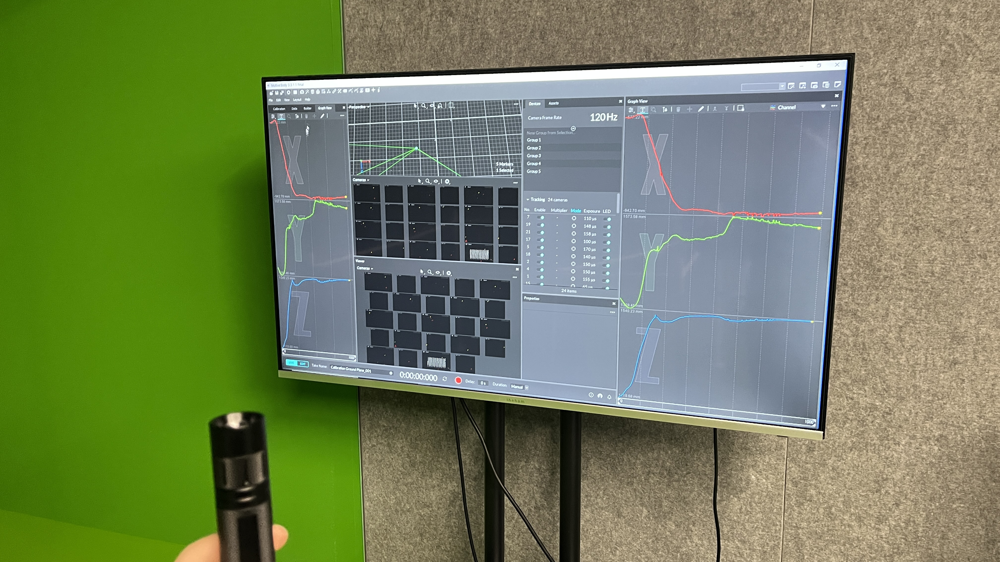

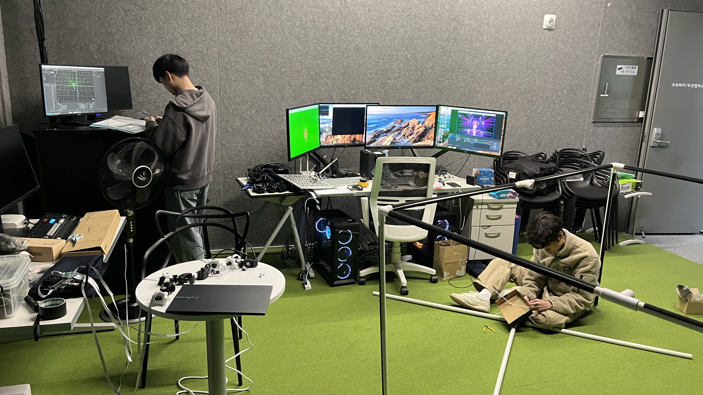
원형 비행에서는 드론의 LED 세 점을 추적했다. 자유 경로 시험에서는 LED 한 점을 대상으로 높이와 이동 방향을 바꾸며 기록했다. 일정한 원형 경로에서의 결과와 빠르게 방향이 바뀌는 움직임을 함께 보면, 평균적인 위치 차이와 추적이 끊기는 조건을 구분해서 살펴볼 수 있다.

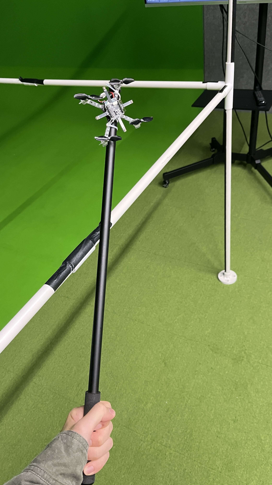
5. GT와 비교한 위치 정확도
두 장비는 기록을 시작한 시각과 좌표축이 다르다. 먼저 높이와 이동 궤적이 대응하는 구간을 찾고, 시간차와 하나의 고정 회전·이동을 맞췄다. 원형 시험은 이륙·원형 비행·착륙을 포함하는 50초씩, 자유 경로는 각각 62초와 70.1초를 사용했다. 그래프의 시간은 각 비교 구간의 시작을 0초로 두었다.
코드가 출력하는 드론 위치는 세 LED의 단순 평균이 아니라 마커 장착판의 중심이다. 따라서 GT의 세 점도 코드의 LED 배치에 맞춰 장착판 중심으로 복원했다. 자유 경로는 양쪽에서 관측한 동일한 LED 한 점을 비교했다. 이렇게 비교 대상을 맞춘 뒤, 같은 시각의 두 위치 사이 3차원 거리를 계산하고 RMSE로 요약했다.
| 시험 | 구간 | GT 이동거리 | 위치 RMSE | 유효 기록 행 |
|---|---|---|---|---|
| 2회전 원형 | 50초 | 7.721m | 19.108mm | 99.906% |
| 3회전 원형 | 50초 | 10.024m | 18.715mm | 99.949% |
| 자유 경로 1 | 62초 | 23.954m | 23.972mm | 94.417% |
| 자유 경로 2 | 70.1초 | 42.279m | 33.453mm | 80.522% |
원형 두 시험의 위치 RMSE는 약 19mm로 비슷했다. 자체 CSV의 기록 간격 중앙값은 원형에서 약 22.23ms, 자유 경로에서 약 44.5ms였다. GT의 4.17ms 기록을 자체 측정 시각에 맞춰 비교했으며, 유효 위치가 없는 행은 오차 계산에서 제외하고 위 표의 유효 기록 비율에 반영했다. 그래프에서도 해당 구간은 선을 끊어 표시했다.

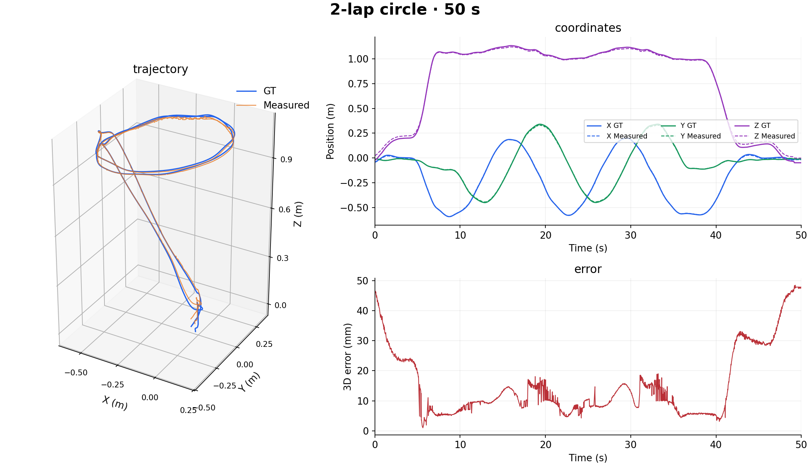

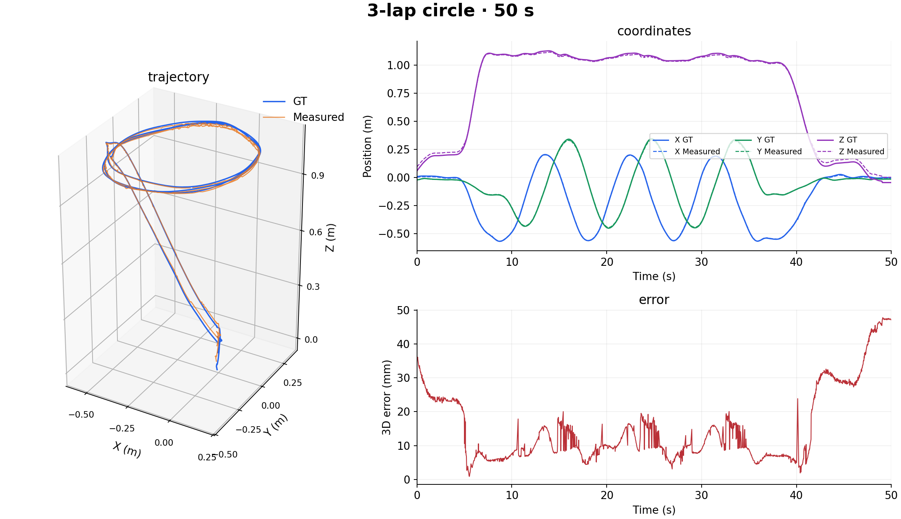
자유 경로 1과 2의 GT 평균 속력은 각각 0.386m/s와 0.603m/s였고, 100ms 구간으로 계산한 최고 속력은 1.062m/s와 1.568m/s였다. 더 빠르고 방향 변화가 큰 자유 경로 2에서 위치 오차와 무효 기록 비율이 함께 증가했다. 이동 속도가 높아지면 작은 시간차도 더 큰 위치 차이로 나타나고, 급격한 표적 이동은 영상에서의 점 대응과 관측 유지에도 부담을 준다. 이 결과를 보며 위치 오차 하나뿐 아니라 움직임의 속도와 추적이 유지된 비율을 함께 살펴야 한다는 점을 배웠다.

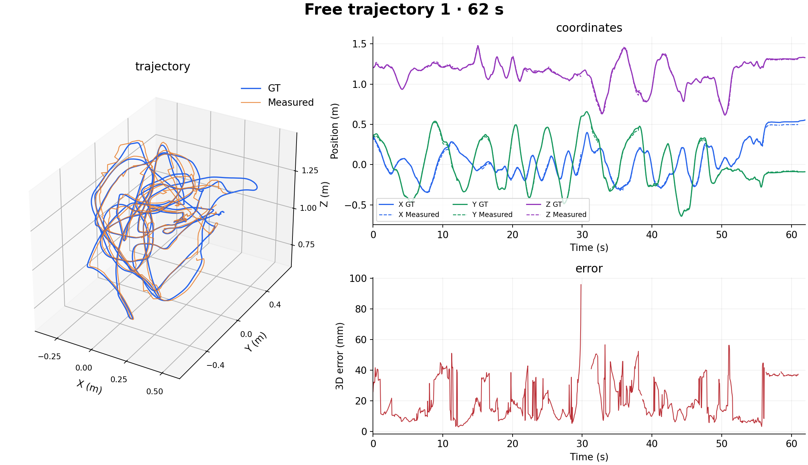

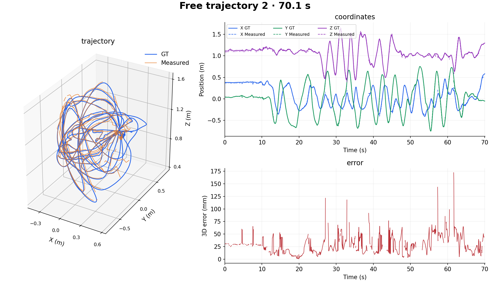
거리·자세와 정렬 기준
정렬에는 각 기록의 동작 구간을 사용했고, 그 기록 안의 위 비교 구간에서 오차를 평가했다. 모든 표본에 하나의 시간차·회전·이동을 적용하며 거리 스케일은 1로 유지했다. GT 총 이동거리 약 1m의 부분 구간마다 상대 변위 차이를 길이로 나눈 평균은 2회전 원형 16.09mm/m, 3회전 원형 14.84mm/m, 자유 경로 1은 24.61mm/m, 자유 경로 2는 43.52mm/m였다.
원형 시험의 GT 자세는 LED 세 점으로 복원했다. 가장 먼 두 점을 좌우로 두고, 좌우 이름의 두 후보는 측정 자세와 비교해 선택했다. 전체 회전각 오차의 중앙값은 각각 2.129°와 1.986°, RMSE는 10.216°와 10.627°였다. 일부 roll·pitch가 크게 튀는 구간이 있어 중앙값과 RMSE의 차이가 컸다. 위치 추정과 자세 추정을 따로 확인하면서 다음 개선 대상을 구체화했다.
6. 장치 연결에서 실험 가능한 시스템으로
이번 단계에서는 카메라와 드론을 연결한 뒤, 좌표가 어디를 가리키는지와 명령이 어떤 움직임으로 이어지는지를 끝까지 따라가 보았다. 카메라 각도를 바꾸면 보정 기준이 달라지고, 월드 원점이 달라지면 같은 숫자의 목표점도 다른 장소를 뜻한다. 또 목표 경로의 모양이 같아도 구간을 연결하는 속도와 이동 시간에 따라 기체의 반응은 달라진다. 장착부, 보정, 경로 생성과 피드백을 따로 보던 단계에서 각 부분이 서로에게 주는 영향을 이해하게 됐다.
센터에서 두 시스템을 함께 운용하며 비교하는 과정도 중요했다. 같은 드론을 보고 있어도 장착판 중심과 LED 한 점은 다른 위치이고, 기록 주기와 시작 시각도 서로 다르다. 실험 조건을 맞추고 원자료를 남겨야 나중에 그래프가 어긋나는 이유를 다시 확인할 수 있었다. 직접 설치하고 조작하며 얻은 기록을 코드의 좌표 정의까지 되짚어 비교한 과정이 이번 작업의 핵심이다.
이 연구는 중앙대학교 전자전기공학부 제어 및 로봇SLAM연구실 심덕선 교수님의 지도 아래 팀원들과 진행하고 있다. 케이지 제작과 설치, 비행 제어 시스템 구현, 현장 검증과 정확도 평가까지 마쳤고, 다음 글에서 졸업논문 작업을 마무리할 예정이다. 논문과 최종 데모 발표 영상을 함께 정리하고, 프로그램을 오픈소스로 공개하면서 저장소 링크도 그 글에 모아둘 계획이다.
실험 자료 다운로드
원형 2회전·3회전과 자유 경로 두 시험을 폴더별로 묶었다. 각 폴더에는 선택 구간의 GT.csv, measured.csv와 당시 정리한 comparison.png가 있다. GT는 개별 LED 좌표를, 측정 CSV는 위치·자세와 유효 상태를 보존한다. 본문의 그래프는 이 기록을 코드의 장착판 중심 기준으로 다시 평가해 그린 결과이다.